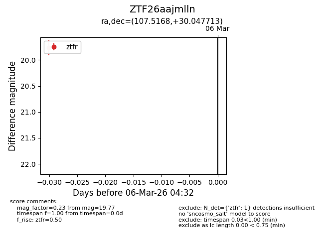
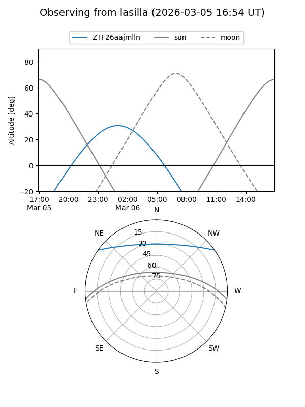
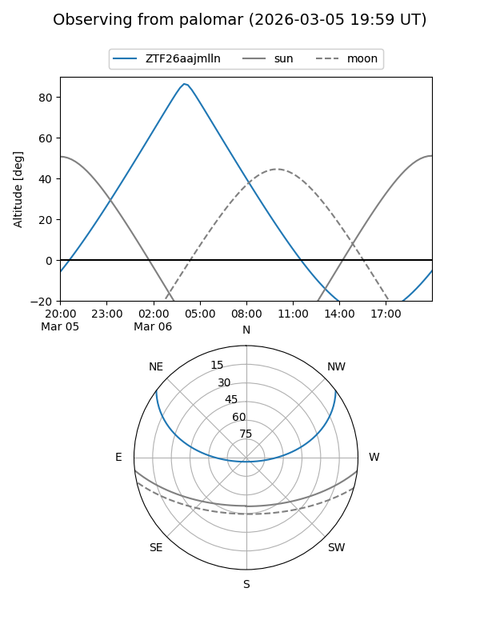

ZTF26aajmlln
Target ZTF26aajmlln at 2026-03-06 04:35
Aliases and brokers:
FINK: link
Lasair: link
ALeRCE: link
alt names
ZTF26aajmlln (ztf,fink_ztf)
Coordinates:
equatorial (ra, dec) = 107.5168,+30.04771
equatorial (HMS+DMS) = 07:10:04.03,+30:02:51.77
galactic (l, b) = (187.3197,+16.91020)
Flags:
Photometry:
last ztfr=19.77
1 ztfr detections
Lightcurve

Visibility


Additional plots